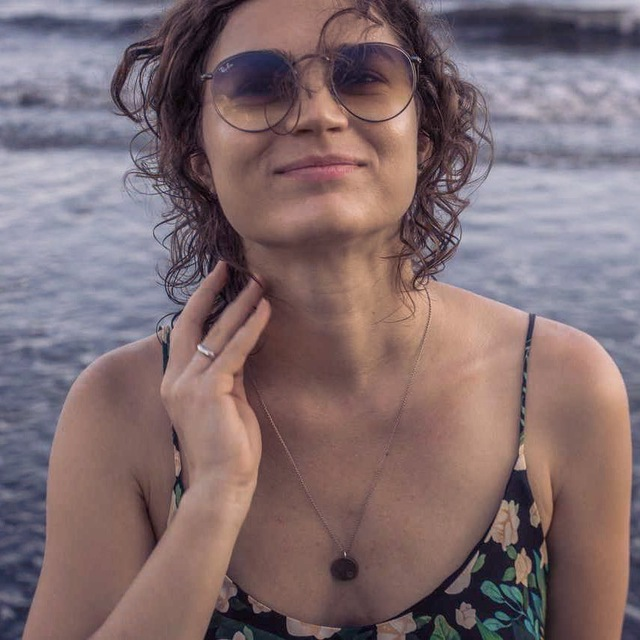
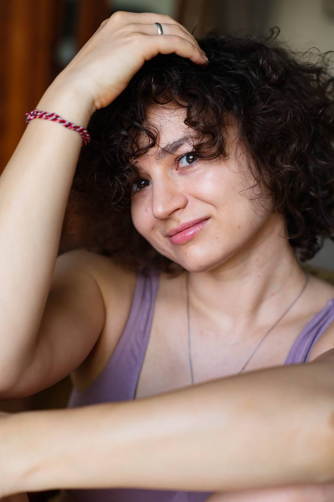

Ксения Галанина · нутрициолог
Питание, с которым вам удобно жить.
Онлайн-консультация: разбираем ваш рацион, привычки и режим дня. После встречи у вас остаётся письменный план питания и конкретные следующие шаги.
Онлайн · первая встреча от 90 минут · 9 000 ₽

С чего начать
Когда советов много, а плана для себя нет
Общих рекомендаций вокруг достаточно. Личный разбор начинается с другого: с того, как вы едите и живёте сейчас — какой у вас рацион, какие привычки и какой режим дня.
На встрече проходим по вашей анкете и вашему рациону. После неё у вас остаётся письменный план питания, собранный под вашу ситуацию.
Работа со взрослыми от 18 лет. Консультации проходят онлайн.
Форматы работы
Длительность и цена
Анкета до встречи, индивидуальный разбор питания и привычек. После встречи остаётся письменный план питания и конкретные следующие шаги.
Для тех, кто уже работал с Ксенией: разбираем, что изменилось, корректируем рацион и отвечаем на накопившиеся вопросы.
Стартовый созвон, персональный план с еженедельной корректировкой, три промежуточных созвона и связь в Telegram.
Как проходит работа
Три шага до плана
Обсуждаем запрос
Напишите в Telegram: расскажите, с чем хотите разобраться. Обсудим подходящий формат и время.
Разбираем анкету и рацион
Анкету вы заполняете до встречи. На консультации проходим по питанию, привычкам и режиму дня.
Получаете письменный план
После первичной консультации остаётся письменный план питания под вашу ситуацию и конкретные следующие шаги.
Дальнейшая работа — отдельная повторная консультация или месячное сопровождение. Формат выбираем отдельно.

Знакомство
Меня зовут Ксения.
Я нутрициолог. Помогаю выстраивать питание с учётом привычек и образа жизни — без жёстких ограничений, голодания и чувства вины.
Канал в Telegram →Вопросы
Что обычно спрашивают
Как проходит консультация?
Консультация проходит онлайн.
Это строгая диета?
Нет. Задача — выстроить стиль питания, который подходит вашему образу жизни и который вы сможете держать без голодания.
С кем вы работаете?
Со взрослыми от 18 лет.
Чем консультация отличается от сопровождения?
Первичная консультация — отдельная встреча и письменный план. «Месяц со мной» — формат на четыре недели: стартовый созвон, план с еженедельной корректировкой, три промежуточных созвона и связь в Telegram.
Как записаться?
Напишите Ксении в Telegram.
Консультации по питанию не заменяют медицинскую диагностику и лечение. Вопросы назначений и их изменения — к лечащему врачу.
Следующий шаг
Начнём с вашего вопроса.
Напишите, с чем хотите разобраться, — обсудим формат, длительность и время.
Написать КсенииНажатие кнопки ничего не бронирует — запись обсуждается в переписке в Telegram.